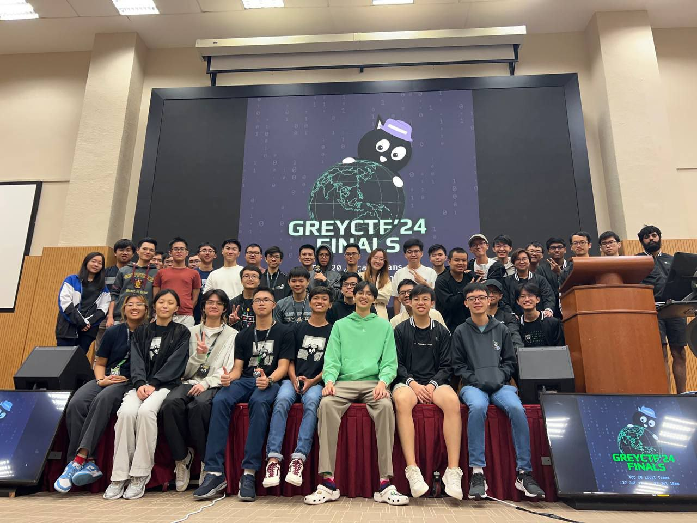
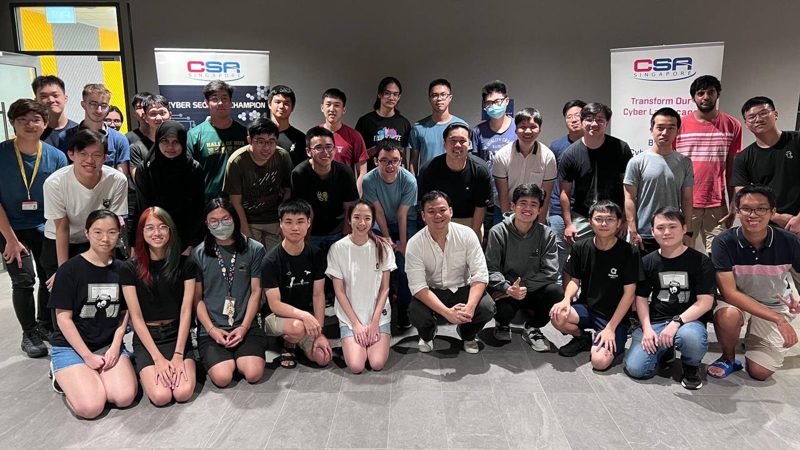
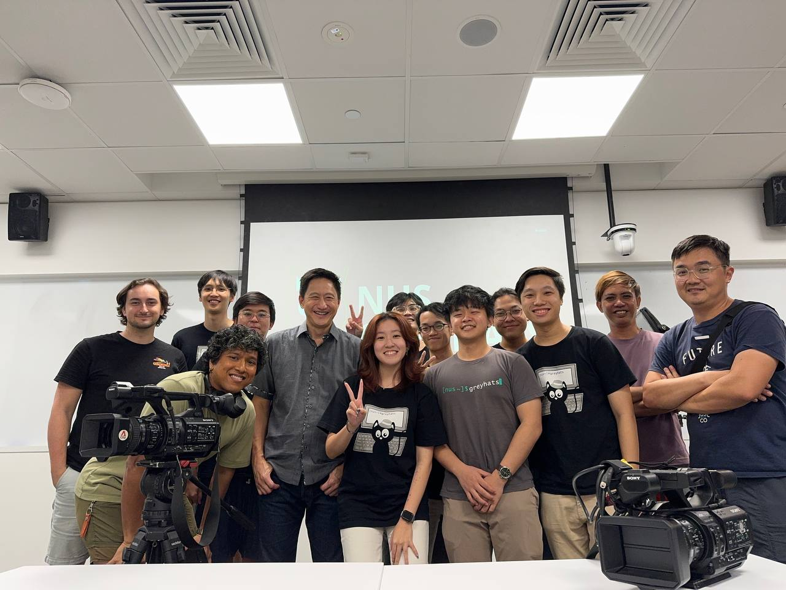

~ grey cat the flag Grey Cat The Flag is our largest CTF event that we have been running for the past 3 years. It is a CTF targeted at both international and local students, with some of the brightest minds around the world participating :) Last year, we flew down participants from Germany, US, Vietnam, China and more to compete in our onsite finals! You can review the montage here. ~ hackbash HackBash is an event that we co-organized with the Cybersecurity Agency of Singapore (CSA), in order to teach some technical cybersecurity concepts and nurture interest amongst the participants in cybersecurity. It is a beginner-level CTF bootcamp targeted at post-secondary students with a competition at the end, covering topics such as Web Exploitation, Cryptography, Digital Forensics and Operating Systems. Last year, we had over 500 local student registrations with 80 finalists.
~ freshmen welcome events At the start of every academic year, we organize a Welcome Tea Session followed by Welcome CTF to introduce freshmen to our club and give them a taste of what cybersecurity would feel like. Find out more and sign up for our upcoming welcome tea here!
~ security wednesdays Security Wednesdays is a recurring event that happens multiple times throughout the semester where we invite down industry experts to give a technical/insightful sharing about their work. This event is typically open to all NUS students. This also typically presents an opportunity for students to network with industry experts any maybe even obtain career opportunities. ~ ctf with greyhats CTF with Greyhats is an initiative where we open-jio all NUS students to participate in international CTFs with us. This initiative promotes a more cohesive and inclusive community while benefitting each individual student through the sharing of ideas and collaboration on CTF challenges. This usually happens fully online from the comforts of our home, but sometime we will book a venue in NUS for people who wants to play physically with the presence of other humans :D~ CNA Talking Point We've collaborated twice with Channel News Asia (CNA) on talking point episodes for the purpose of cybersecurity awareness and investigative journalism. You can find our episodes at the link below! How Do Scammers Take Over Your Phone And Steal Your Money? Are Phone (And Laptop) Repair Shops Spying On You? | Talking Point  < go back